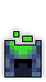
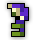
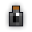
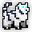
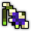
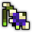

| Last updated: Exalt Version 5.12.0.0 (June 2025) |
|---|
 Teleportation Disabled Teleportation DisabledLimit of 25 player(s)  Music: BOUNDARY::BREAK Music: BOUNDARY::BREAK
|
| Dust Drops | ||
|---|---|---|
| 29-35 |
35-43 |
0 |
High Tech Terror is a high-level boss dungeon that consists of a fight against the previously-scrapped F.E.R.A.L. The dungeon is intended to showcase new projectile functions that are made possible by the Exalt client. It is a source of Wisdom, Mana, and Life Potions, T12 Weapons/Armors, as well as T6 Abilities/Rings, four unique Untiered items, and the entire Scientific Summoner ST Set.
The portal to High Tech Terror has a chance to drop from Hadopelagic Submersible. It is also accessible via the Court of Oryx.
This dungeon is part of the ‘Travel of the Decade’ fame bonus.
| The Realm Eye says: |
|---|

To house his unusual pet, Oryx uses a small laboratory in his castle to contain the F.E.R.A.L. and test its powers. The test chamber is rigged with numerous other inventions of Dr. Terrible to experiment with the creature’s interactions in a secure environment. I am certain the acronyms assigned to these creations hold meaning, but their names elude even I. Perhaps they can still be discovered, but their inventor is especially secretive on this matter. |
The High Tech Terror Key can be bought in the Nexus for 150  .
.
TBA
The dungeon is a large square chamber consisting of tiles identical to those in the Mad Lab, with the boss being initially found in the center. Pathways in the shape of a hashtag sign (#) allow safe traversal between nine square Lab Vats, with the four inner corners housing solid coil-like structures that serve as invincible turrets in the later parts of the fight. The Lab Vats change color from blue to green once the switch enemy has been defeated in the respective vat; killing the switch again puts a grate over the vat, making it normal ground.
| Item | Drops From |
|---|---|
|  | F.E.R.A.L. |
    |
F.E.R.A.L. |
   |
F.E.R.A.L. |
|  | F.E.R.A.L. |
 |
F.E.R.A.L. |
  |
A.E.G.I.S. |
     |
F.E.R.A.L. |
Feral attacks are actually predictable and easy to dodge as they linger a bit before launching towards players, the real threat are the minions around like its tentacles and mainly M.E.R.V as its  Paralyzed shots makes player open to attacks and its stacked chain shots can be fatal. due to that It is crucial to pay attention your surroundings especially where your heading to in order to survive, as walking aimlessly to danger can easily get you killed.
Paralyzed shots makes player open to attacks and its stacked chain shots can be fatal. due to that It is crucial to pay attention your surroundings especially where your heading to in order to survive, as walking aimlessly to danger can easily get you killed.
It was first announced in the June 24, 2020 Producer’s Letter, and a teaser was released in the October 9, 2020 Producer’s Letter, before the dungeon was released on October 19, 2020 with Exalt Version 1.2.0.1 (Oct 2020).
Before Exalt Version 5.11.0.0 (May 2025), dungeon completion gave 63-147  with 60% chance and 23-54
with 60% chance and 23-54  with 50% chance.
with 50% chance.
Before Exalt Version 5.12.0.0 (June 2025), dungeon completion gave 26-32  and 26-34
and 26-34  .
.